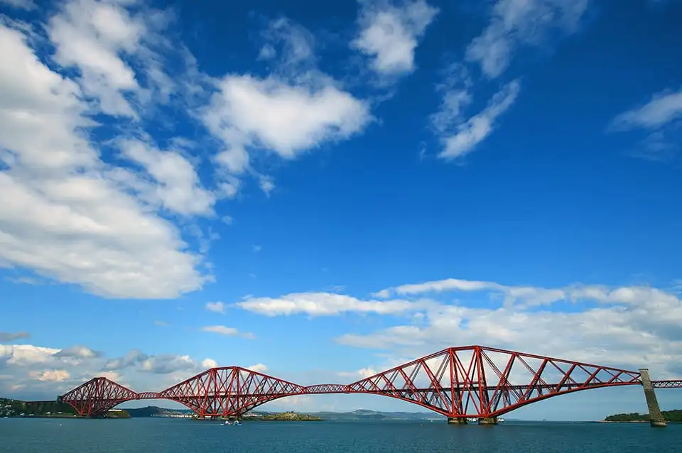

The Forth Bridge[2] is a cantilever railway bridge across the Firth of Forth in the east of Scotland, 9 miles (14 kilometres) west of central Edinburgh. Completed in 1890, it is considered a symbol of Scotland (having been voted Scotland's greatest man-made wonder in 2016), and is a UNESCO World Heritage Site.[3] It was designed by English engineers Sir John Fowler and Sir Benjamin Baker.[4] It is sometimes referred to as the Forth Rail Bridge (to distinguish it from the adjacent Forth Road Bridge)